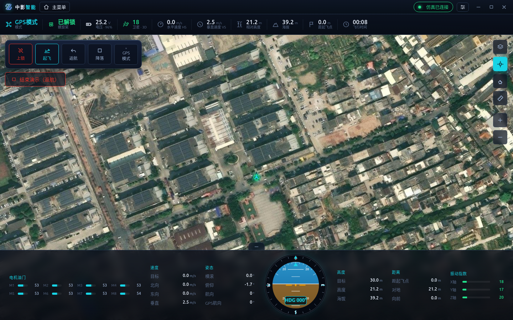
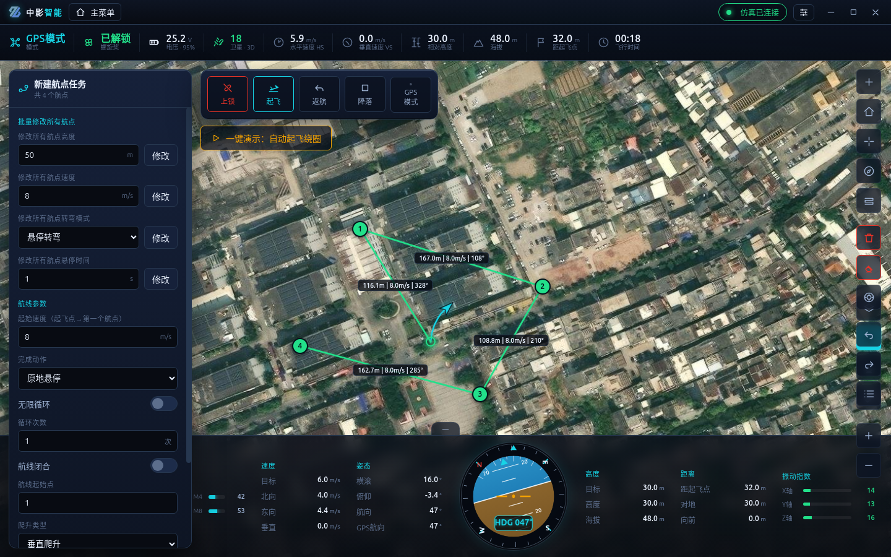
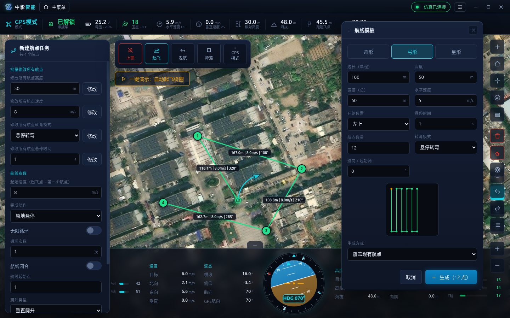
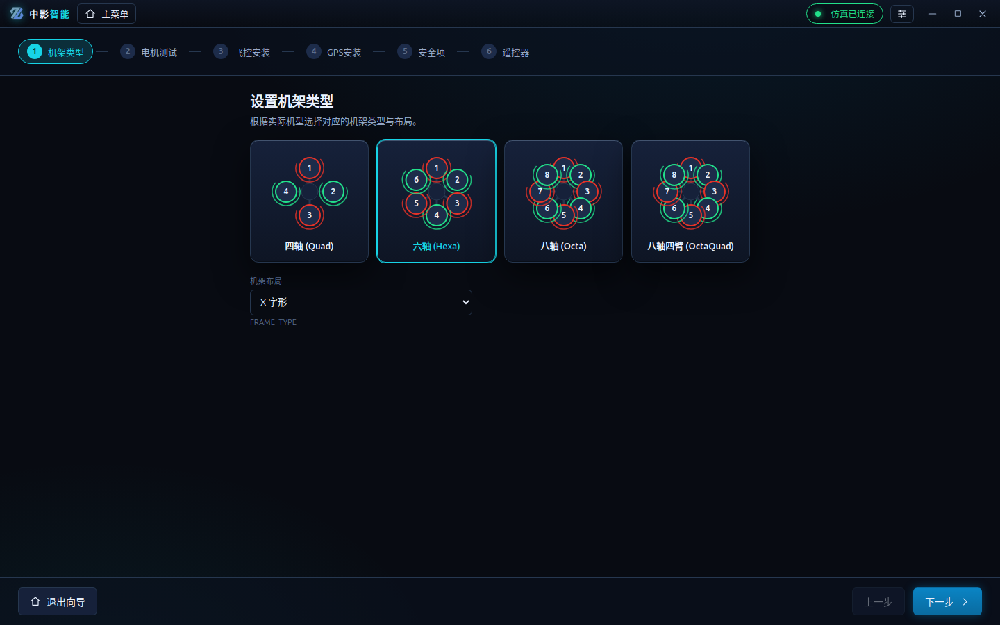
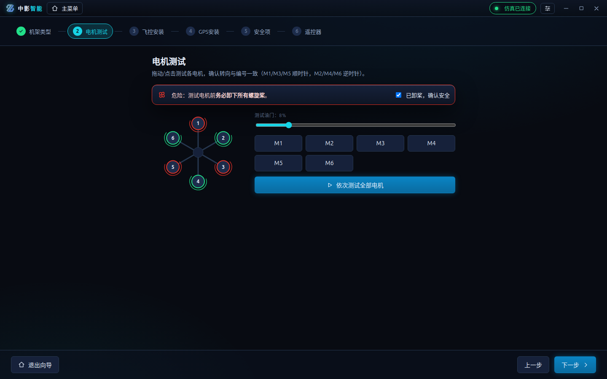
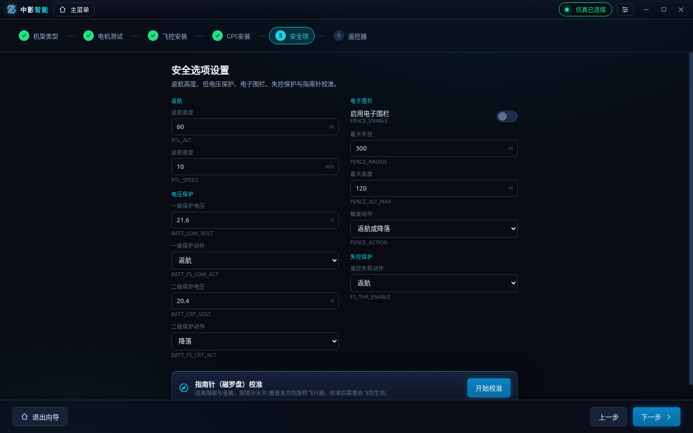
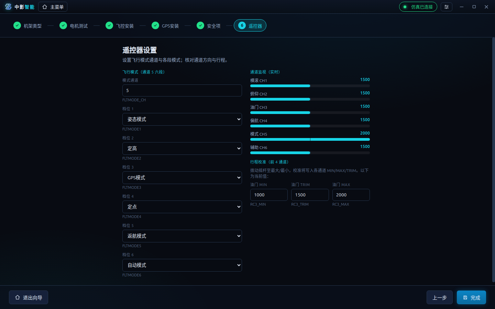
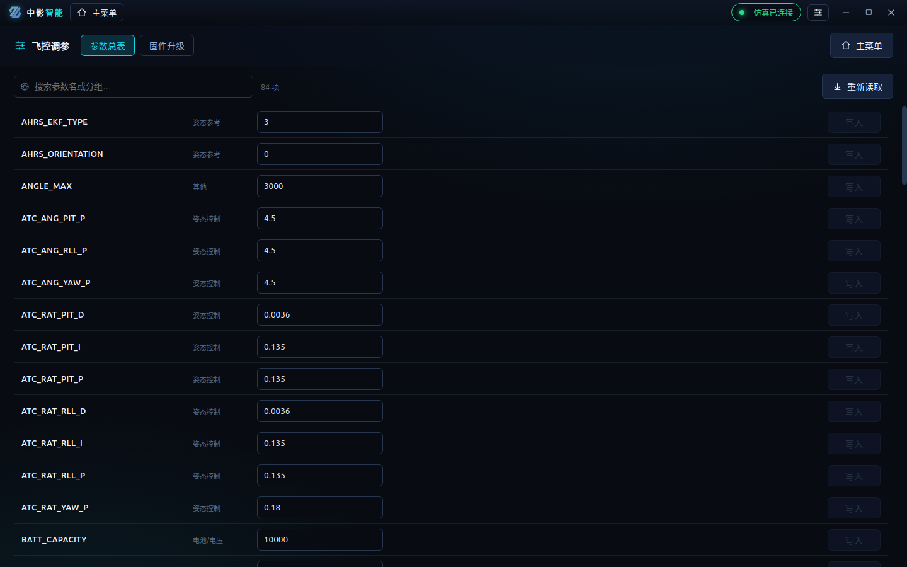
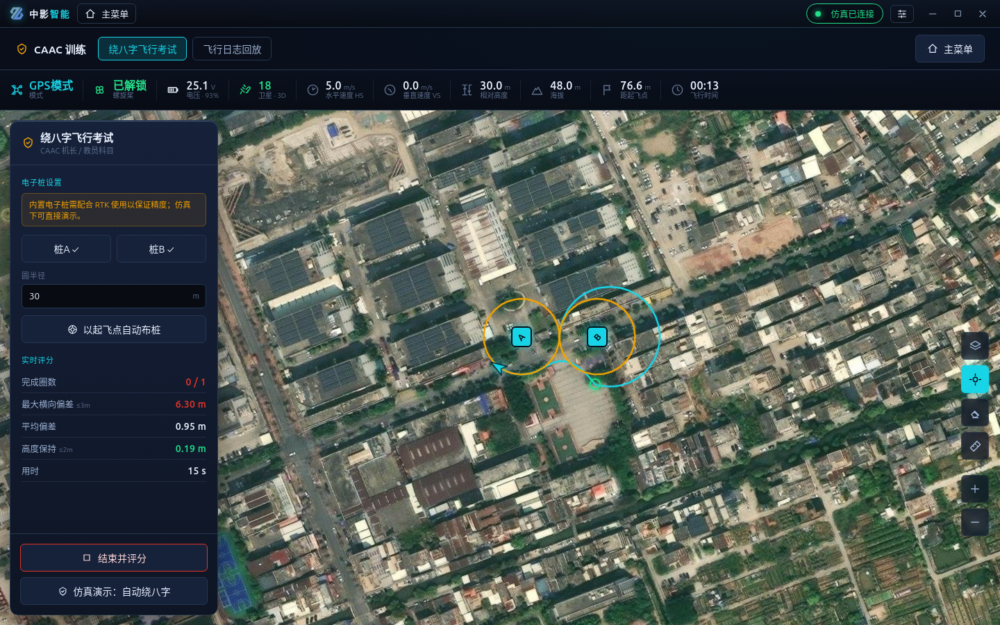
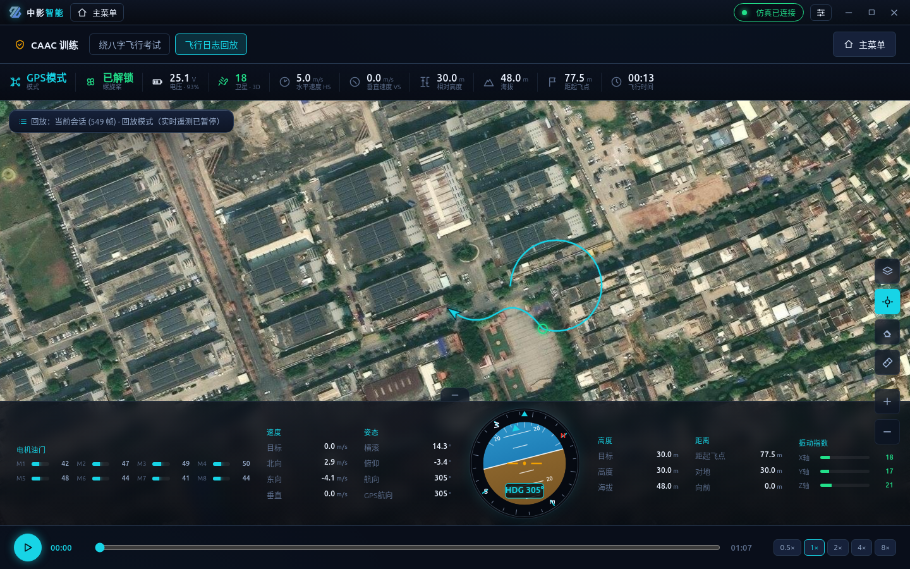

1 前言：本手册怎么用
本手册介绍 中影智能 无人机地面控制站（下称"地面站"）的使用方法，供无人机培训学校的教练与学员参考。
地面站连接 APM / ArduPilot 飞控（参考硬件为翎客 X6PRO），可用于日常教学、模拟练习与 CAAC 考试科目训练。软件遵循"仿真优先 + 真机接口"设计：学员无需真机即可在"模拟飞行"中熟悉全部界面与操作，教练则通过真机（串口 / 数传）进行教学演示与考试。
🎓 教练建议路线
第 3→4→9→10 章（安装、连接、装机向导、调参）打好机器基础，再用第 11 章组织绕八字考试与评分。
🧑✈️ 学员建议路线
第 3→7→5→6 章（安装、模拟飞行、认识界面、手动操作），熟练后进入第 8 章航线规划与第 11 章绕八字练习。
2 软件简介与功能总览
打开软件进入主菜单，六个功能模块以环形排布，鼠标移到任一功能上，中心会显示该功能的说明：
图 2-1 主菜单：环形排布的六大功能模块 + 右上角连接状态与设置
| 模块 | 说明 | 对象 |
|---|
| 手动飞行 | 实时遥测、姿态球、一键解锁/起飞/返航/降落、切换飞行模式 | 教练·学员 |
| 航线飞行 | 航点规划、模板（圆/弓/星）、旋转平移、上传/下载航线 | 教练·学员 |
| 装机向导 | 机架、电机测试、安装偏移、安全项、指南针校准、遥控器 | 教练 |
| CAAC 训练 | 绕八字飞行考试（实时评分）、飞行日志回放 | 教练·学员 |
| 飞控调参 | 全参数读写、固件升级 | 教练 |
| 模拟飞行 | 内置飞行仿真，无需真机即可练习 | 学员 |
💡 界面右上角"连接状态"
绿色=已连接，红色=未连接。任何时候点击它都可打开"连接设置"。
3 系统要求与安装启动
系统要求
- 操作系统：Windows 10 / 11（64 位）
- 内存：4 GB 以上；磁盘：500 MB 可用空间
- 真机连接：USB 串口 或 数传（默认波特率
115200）
安装（便携版）
- 将
中影智能-win.zip 拷贝到电脑并解压到任意目录（如桌面）。
- 进入解压出的文件夹，双击
中影智能.exe 启动，无需安装。
- 首次运行 Windows 若弹出安全提示，选择"仍要运行"。
⚠ 注意
请勿将软件放在中文路径过深或受保护的系统目录；建议解压到普通用户目录，保证日志/配置可正常读写。
🎓 教练：批量部署
可将解压好的整个文件夹拷贝到各教学机，或制作快捷方式统一分发。
界面设置（音效与动效）
标题栏右上角的 设置 按钮可调整：
- 界面音效：悬停、选中、危险操作等提示音的总开关与音量。
- 飞行告警音量：独立于界面音效——即使关闭界面音效，电压过低、失控等安全告警仍会发声，建议不要调至 0。
- 精简动效：关闭环形菜单展开、页面过渡等动画。
🎓 教练：教室场景建议
多台机器同处一室时，可让学员关闭"界面音效"以免相互干扰，但
保留飞行告警音量。配置较低的笔记本可打开"精简动效"提升流畅度。
4 连接无人机
点击右上角"连接状态"胶囊，打开"连接设置"，共四种数据源：
| 方式 | 用途 | 参数 |
|---|
| 仿真 | 学员练习首选，无需硬件 | 直接连接 |
| 串口 | USB / 数传 连接真机飞控 | 选择 COM 口，波特率 115200 |
| UDP | 仿真器 / 网络数传 | 本地端口（SITL 默认 14550） |
| TCP | 网络转发的飞控 | 主机 + 端口（SITL 默认 5760） |
🧑✈️ 学员
选"
仿真"即可开始。连接后顶部/底部所有仪表都会实时跳动，与真机完全一致。
🎓 教练：真机连接
USB 连接飞控后在"串口"中选择对应 COM 口（波特率 115200）；数传同理。连接成功后胶囊变绿并显示端口。作业时请务必先给遥控器开机并保持油门最低，再给飞控端供电。
5 认识飞行主界面

图 5-1 飞行主界面：顶部遥测栏、地图、左侧指令坞、底部仪表栏与姿态球
顶部遥测栏（无人机状态）
| 字段 | 含义 | 字段 | 含义 |
|---|
| 模式 | 当前飞行模式 | 垂直速度 VS | 爬升/下降速度 |
| 螺旋桨 | 已解锁 / 已闭锁 | 相对高度 | 相对起飞点高度 |
| 电压 | 电池电压 / 余量 | 海拔 | 海拔高度 |
| 卫星 | 卫星数 / 定位类型 | 距起飞点 | 水平直线距离 |
| 水平速度 HS | 对地水平速度 | 飞行时间 | 解锁后累计 |
底部仪表栏
- 电机油门：M1–M8 各电机输出（%）。
- 速度 / 姿态：目标与北/东/垂直速度；横滚、俯仰、航向、GPS 航向。
- 姿态球：人工地平仪 + 罗盘环，直观显示飞行器姿态与朝向。
- 高度 / 距离 / 振动指数：目标/当前/海拔高度；距起飞点/对地；X/Y/Z 振动（绿色正常、黄色注意、红色危险）。
💡 地图工具（右侧）
切换卫星/街道底图、跟随飞机、清除轨迹、放大缩小。左侧指令坞见第 6 章。
6 手动飞行操作
飞行界面左上角为"指令坞"，含 解锁/上锁、起飞、返航、降落、切换飞行模式。危险指令均需二次确认。
- 解锁：确认周围安全、（真机）已卸桨或场地空旷后点击"解锁"，电机开始怠速旋转。
- 起飞：点击"起飞"，确认目标高度（默认 30 m），飞行器自动爬升到该高度悬停。
- 切换模式：点击模式按钮选择 姿态 / 定高 / GPS / 定点 / 返航 / 自动 等（见附录 A）。
- 返航：点击"返航"，飞行器爬升到返航高度后飞回起飞点并降落。
- 降落：点击"降落"原地下降；上锁在落地后使电机停转。
⛔ 危险
飞行中掰杆上锁（外八/内八）会导致坠机；空中严禁上锁，紧急情况除外。
⚠ 警告
初次起飞建议使用
姿态模式，在无风、空旷、远离人群与建筑处进行；起飞前核对指南针方向。
7 模拟飞行（学员练习）
🧑✈️ 学员
本章是无真机时的主要练习方式。所有界面、仪表、航线与考试功能都可在仿真中体验。
- 主菜单点击"模拟飞行"，软件自动以仿真连接。
- 点击左下角"一键演示：自动起飞绕圈"，仿真无人机会自动解锁、起飞并绕圈飞行。
- 观察顶部/底部遥测、姿态球与地图轨迹的实时联动，熟悉各读数含义。
- 也可用指令坞手动 解锁→起飞→切模式→返航→降落，反复练习标准流程。
💡 提示
仿真与真机在界面上体验一致；学员练熟后再上真机，可显著降低炸机风险。
8 航线飞行与航点规划
主菜单进入"航线飞行"。右侧为航点工具栏，左侧为航线/航点参数面板。

图 8-1 航线规划：编号航点、航线折线与分段标签（距离 | 速度 | 航向），左侧航线设置
基础操作
- 点击工具栏"+ 添加航点"进入加点模式，在地图上点击落点，自动生成编号航点。
- 点击某航点选中，左侧编辑其 经纬度 / 高度 / 方位角 / 相对距离 / 转弯方式 / 悬停 / 速度；直接拖动航点即可移动。经纬度可切换「十进制 / 度分秒」显示。
- 在航点上点右键，可快速编辑、在其后插入新点、以它为基准生成相对坐标、或删除该点。
- 未选中时，左侧为航线设置：批量修改所有航点高度/速度/转弯/悬停，及 完成动作 / 循环 / 闭合 / 起始点 / 爬升类型。批量修改在输入框内按 Enter 也可确认。
- 工具栏还提供：设置起飞点、删除当前航点、清空、显示全部、撤销/重做、航点列表。未连接飞控时，可用「设置起飞点」在地图上手动指定起飞点，再据此规划航线。
- 地图工具栏的测距按钮可连续点击测量距离，按 Esc 结束。
航线模板
点击工具栏"航线模板"，可一键生成 圆形 / 弓形（扫描线）/ 星形 航线，带实时预览：

图 8-2 弓形（扫描线）模板：设置边长/宽度/航点数/航向，面板内含路径预览。该面板可拖动标题栏移开，便于同时观察地图
变换与上传下载
- 航线变换：绕基点旋转（延北夹角）、按向北/向东平移、航点反序。
- 航点列表：工具栏最后一个按钮，列出全部航点及其高度/速度/转弯/悬停；可拖拽或上下箭头调整顺序，也可逐项选中、删除。
- 收发：在"航点列表"里切到 上传 / 下载 页，上传航点 写入飞控，下载航点 读回飞控中的航线。
💡 让仿真飞航线
上传航线后，在指令坞切换到"
自动模式"，仿真无人机即按航线自动飞行。
9 装机向导（六步）
🎓 教练
装机向导用于新机调试或参数复核。请按步骤条依次完成六步。
第 1 步·机架类型

图 9-1 选择四/六/八轴机架及布局（+/X）
第 2 步·电机测试

图 9-2 电机测试：卸桨确认后逐个/依次测试，核对转向（红=顺时针，绿=逆时针）
⛔ 危险
电机测试前
务必卸下所有螺旋桨，并勾选"已卸桨，确认安全"后方可操作。
第 3–4 步·安装偏移
若飞控 / GPS 未安装在机架正中心，按实际位置设置 X/Y/Z 偏移；并选择飞控安装方向。GPS1 与 GPS2 偏移应一一对应。
第 5 步·安全项

图 9-3 安全项：返航高度、一/二级电压保护、电子围栏、失控保护、指南针校准
- 返航高度：默认 60 m，按场地净空设置。
- 电压保护：一级/二级阈值与对应动作（返航 / 降落）。
- 电子围栏：启用后设定最大半径与高度、触发动作。
- 指南针校准：点击"开始校准"，按提示水平/垂直各方向旋转飞行器，进度条走满即完成。校准后需重启飞控生效。
⚠ 指南针校准注意
请勿在强磁、大块金属（停车场、含钢筋建筑）附近校准；校准时勿随身携带钥匙、手表等磁性物。
第 6 步·遥控器

图 9-4 遥控器：设置飞行模式六段、实时通道监视、行程校准
- 飞行模式：一般用通道 5（三段开关）映射六个档位的模式。
- 通道监视：拨动摇杆观察 CH1–CH4 数值与方向是否正确。
- 行程校准：拨动摇杆至最大/最小，将各通道 MIN/MAX/TRIM 写入飞控。
10 飞控调参与固件升级
🎓 教练
调参涉及飞行安全，非必要请勿随意修改；修改前建议记录原值。
参数总表

图 10-1 参数总表：搜索、按分组浏览、编辑数值、逐项"写入"飞控
- 连接飞控后进入"飞控调参"，点击"读取参数"加载全部参数。
- 用搜索框按参数名或中文分组筛选；在数值框修改后点击"写入"生效（脏值高亮）。
固件升级
图 10-2 固件升级：选择 .lkiso 固件文件并升级
⛔ 危险
固件升级过程中
请勿断电或拔掉 USB。升级需 USB 连接飞控并进入 bootloader，务必在真机环境下操作。
11 CAAC 绕八字飞行考试
主菜单进入"CAAC 训练"→"绕八字飞行考试"。设置两个电子桩后，软件绘制两圆与理想八字路径，并对飞行进行实时评分。

图 11-1 绕八字考试：两电子桩 + 理想八字路径 + 左侧实时评分面板
操作步骤
- 布桩：点击"设置桩A/桩B"后在地图点击落点；或"以起飞点自动布桩"。设置圆半径。
- 开始考试：起飞并进入八字航线后点击"开始考试"，开始实时评分。
- 结束评分：完成后点击"结束并评分"，得出合格判定。
- 无真机时可点"仿真演示：自动绕八字"，观察评分逻辑。
评分项与判定
| 评分项 | 含义 | 合格参考 |
|---|
| 完成圈数 | 完整 8 字数量 | ≥ 1 |
| 最大横向偏差 | 偏离理想圆环的最大距离 | ≤ 3 m |
| 平均偏差 | 全程平均横向偏差 | 越小越好 |
| 高度保持 | 相对起始高度的最大波动 | ≤ 2 m |
| 用时 | 考试用时 | 参考 |
🎓 教练
内置电子桩需配合
RTK 使用以保证精度；判定阈值可作为教学标准，仿真下可先带学员理解评分逻辑。
12 飞行日志回放
"CAAC 训练"→"飞行日志回放"。软件会自动录制飞行会话，可回放复盘。

图 12-1 日志回放：时间轴（播放/暂停/0.5–8×/拖动）驱动仪表与地图轨迹同步
- 点击"回放当前会话"载入本次飞行记录（或"导入日志文件"载入已保存的 .json）。
- 用底部时间轴 播放/暂停、拖动定位、切换 0.5×–8× 倍速；仪表与地图随之复现。
- 回放模式下实时遥测暂停，专注复盘飞行过程。
💡 提示
真机飞行日志也存于飞控 TF 卡的
APM/logs 目录（
.lklog）。教练可用回放带学员逐段分析动作。
13 安全操作规范
⛔ 禁止事项
- 禁止在人群密集、障碍物多、强磁或信号干扰区域飞行。
- 作业时禁止遮盖遥控器天线；禁止在飞行中接打电话。
- 禁止疲劳、饮酒或身体不适时操作；未经许可禁止雨天、夜晚、强风飞行。
- 电机运转时禁止靠近；空中严禁掰杆上锁。
⚠ 必须执行
- 保持飞行器在视距范围内；作业前检查遥控器电量与飞控供电电压。
- 开始作业前先设置好失控保护；先开遥控器并保持油门最低，再给飞控供电。
- 结束作业先给飞控端断电，再关遥控器；降落后电机未停禁止松开遥控器。
- 飞控解锁时会刷新返航点，请在期望的返航位置解锁。
🎓 教练
组织学员实飞前，务必带其完成本章要点确认，并在场全程监督。未成年人使用须专业人士在场指导。
15 附录
附录 A · 飞行模式对照
| 模式 | 说明 |
|---|
| 姿态模式（Stabilize） | 仅保持姿态平衡，会漂移，不自动定位。初学建议此模式起飞。 |
| 定高（AltHold） | 自动保持高度。 |
| GPS 模式（Loiter） | GNSS 定位，可任意高度自动定位悬停。 |
| 定点（PosHold） | 位置保持，手感更直接。 |
| 返航（RTL） | 自动飞回起飞点并降落。 |
| 自动（Auto） | 执行预设航线任务。 |
| 降落（Land） | 原地自动降落。 |
| 指引（Guided / RTK） | 接受地面站指点飞行 / 电子桩。 |
附录 B · 术语表
| 术语 | 含义 | 术语 | 含义 |
|---|
| 解锁 / 上锁 | 使电机可转 / 停转 | 航点 / 航线 | 路径点 / 路径 |
| 返航高度 | RTL 爬升目标高 | 电子围栏 | 限定飞行范围 |
| 失控保护 | 遥控失联时动作 | 电子桩 | 绕八字虚拟标桩 |
| HS / VS | 水平 / 垂直速度 | RTK | 高精度差分定位 |
附录 C · 指示灯速查（X6PRO）
| 状态 | 指示灯 | 状态 | 指示灯 |
|---|
| 遥控器未连接 | 黄灯快闪 | 返航模式 | 蓝灯慢闪 |
| 已连接·GPS未定位 | 黄灯慢闪 | 降落模式 | 紫灯慢闪 |
| 已连接·GPS已定位 | 绿灯慢闪 | 一级电压报警 | 黄灯快闪 |
| 姿态模式（解锁） | 黄灯慢闪 | 二级电压报警 | 红灯快闪 |
| GPS 模式（解锁） | 绿灯慢闪 | 指南针校准中 | 蓝/紫灯慢闪 |
中影智能 无人机地面控制站 · 使用手册 V1.0
适用飞控：APM / ArduPilot（翎客 X6PRO）· 连接方式：仿真 / 串口 / UDP / TCP
本手册配图均为软件真实界面截图。飞行有风险，操作需规范，请在教练指导下进行。